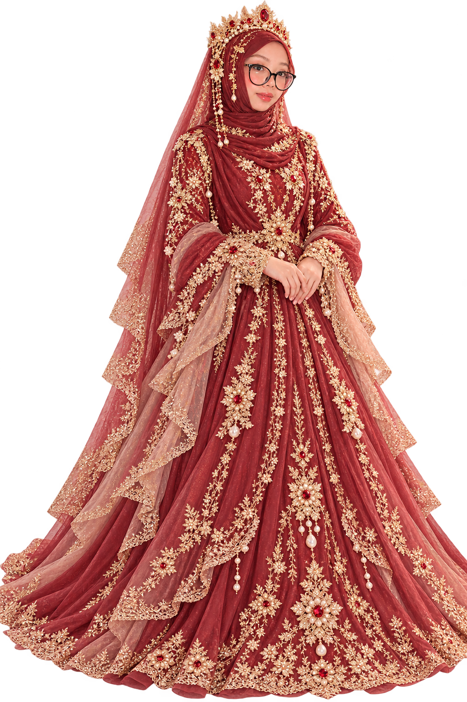
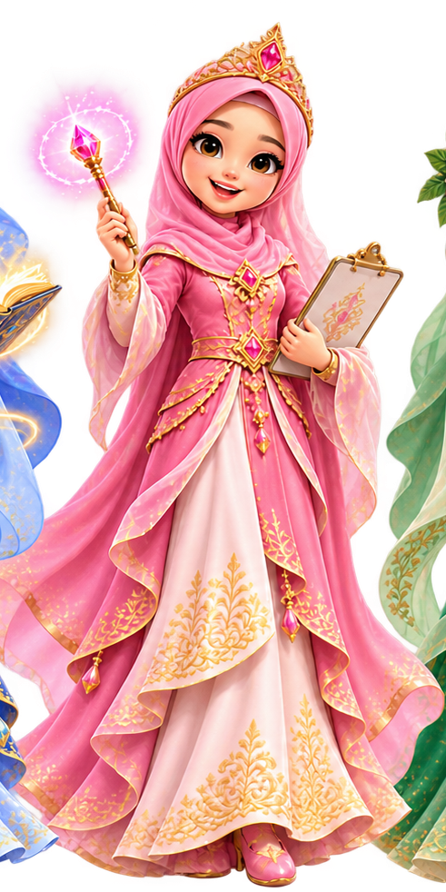
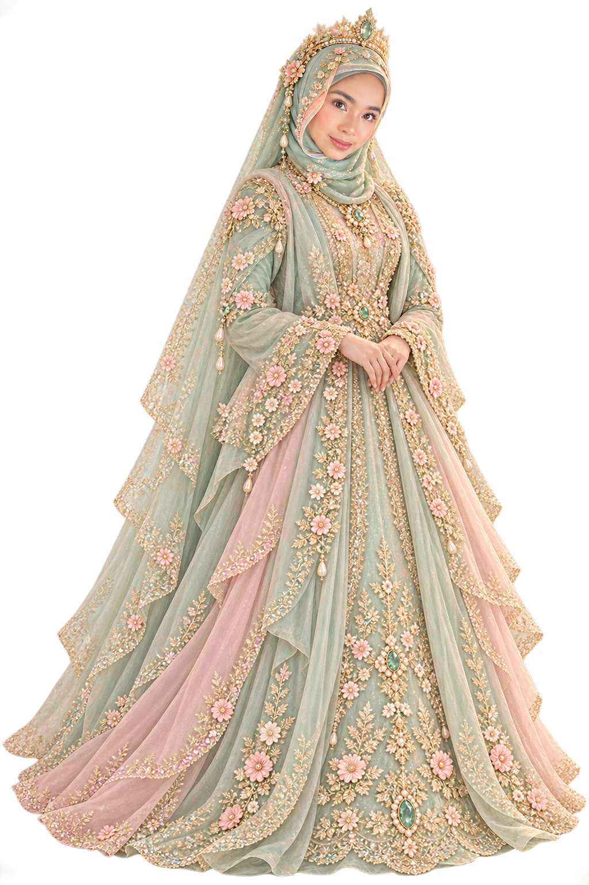
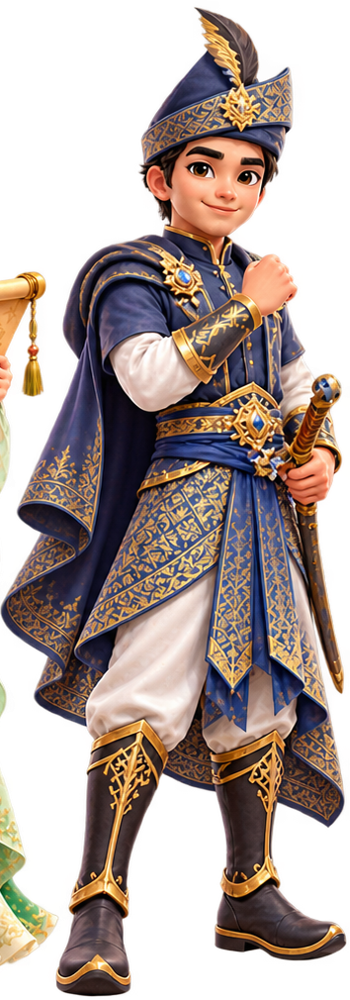

✦ Bacalah Manjaku ✦
Dunia Peribahasa, Jendela Ilmu
Selamat datang ke alam ilmu! Teroka, baca, faham dan amalkan peribahasa dalam kehidupan seharian.

Puteri PurutPakar Membaca

Puteri ManisNilai Pentaksiran

Puteri NipisSemak Bacaan

Hang KasturiPengawal
✧ PILIH PENGEMBARAAN ANDA ✧
Muzik latar pilihan: letakkan fail muzik-fantasi.mp3 dalam repositori GitHub yang sama.